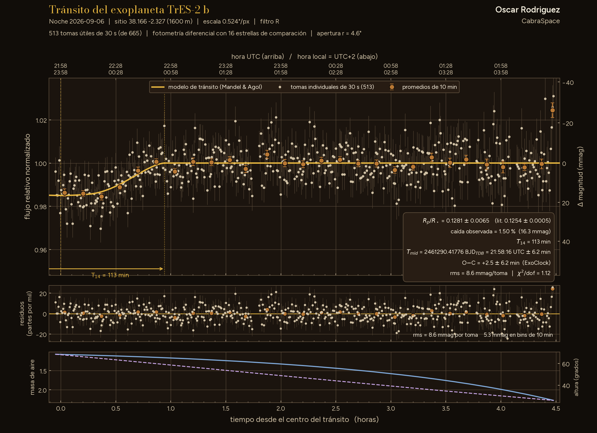

Tabula II · Lám. V · Curva de luz · una noche
Tránsito de TrES-2 b
Curva de luz del tránsito del exoplaneta TrES-2 b, medida desde el observatorio AstroCamp.

TrES-2 b fue el primer planeta en tránsito hallado en el campo de la futura misión Kepler: un júpiter caliente que da una vuelta en 2,47 días, con tránsitos de un 1,4 % de profundidad1. Cruza la estrella muy cerca de su borde; en 2007 era, entre los planetas cercanos, el de mayor parámetro de impacto2. En 2011 se le llamó «el exoplaneta más oscuro conocido»3. Según el análisis de los datos de Kepler, su albedo geométrico va de 0,0144 a 0,025, y quedaría por debajo del 1 % si se descuenta su emisión térmica3. Su espectro con el Hubble no muestra rasgos5. Si su órbita decae sigue abierto: con tránsitos de aficionados (base ETD) se estimó un acortamiento del periodo de 12,6 ± 2,4 ms por año6 y con TESS, de 5,58 ± 1,81 ms por año7, sin que ninguno se dé por concluyente; ExoClock IV (un preprint de 2025, aún sin revisión por pares) no lo incluye entre los planetas que se apartan de un periodo constante8.
Mi noche del 6 de septiembre empezó a mitad del tránsito: tengo la salida, no la entrada9, inf.. La hora central vale, +1,8 ± 6,2 min frente a la efeméride de ExoClock; la profundidad, no9, 10.
Resultado parcial. La hora central del tránsito vale para el O−C; la profundidad no, porque falta el ingreso del tránsito.
ExoClock la acepta marcada: los residuos no son gaussianos.
Hecho conCabraTransit · Fotometría de tránsitos de exoplanetas, del FITS a la curva de luz. En el taller: aún sin publicar.
- Planeta
- TrES-2 b
- Noche
- 6 · IX · 2026
- Filtro
- R
- Tomas
- 665 × 30 s
- Rp/R★ medido (orientativo)
- 0.1251 ± 0.0064 (estad.) ± 0.0125 (sist.)
- Rp/R★ publicado
- 0.1254 ± 0.0005 (Esteves et al. 2015)
- (Rp/R★)² (orientativo)
- 1.56 % (medida) vs 1.57 % (literatura)
- Duración prevista
- 109 min
- Centro del tránsito
- 21:57:31 UTC ± 6.2 min
- O−C
- +1.8 min (ExoClock)
- Telescopio
- Celestron C9.25
- Lugar
- AstroCamp · 1600 m
Referencias
- 1O'Donovan, F. T. et al. (2006). «TrES-2: The First Transiting Planet in the Kepler Field». ApJ 651, L61. arXiv:astro-ph/0609335 Publicado
- 2Holman, M. J. et al. (2007). «The Transit Light Curve Project. VI. Three Transits of the Exoplanet TrES-2». ApJ 664, 1185. arXiv:0704.2907 Publicado
- 3Kipping, D. M. & Spiegel, D. S. (2011). «Detection of visible light from the darkest world». MNRAS 417, L88. arXiv:1108.2297 Publicado
- 4Barclay, T. et al. (2012). «Photometrically derived masses and radii of the planet and star in the TrES-2 system». ApJ 761, 53. arXiv:1210.4592 Publicado
- 5Ranjan, S. et al. (2014). «Atmospheric Characterization of 5 Hot Jupiters with Wide Field Camera 3 on the Hubble Space Telescope». ApJ 785, 148. arXiv:1403.1266 Publicado
- 6Hagey, S. R., Edwards, B. & Boley, A. C. (2022). «Evidence of Long-Term Period Variations in the Exoplanet Transit Database (ETD)». AJ 164. arXiv:2209.10752 Publicado
- 7Biswas, S. et al. (2024). «Probing the Possible Causes of the Transit Timing Variation for TrES-2b in the TESS Era». AJ 168, 176. arXiv:2409.12069 Publicado
- 8Kokori, A. et al. (2025). «ExoClock Project IV: A homogeneous catalogue of 620 updated exoplanet ephemerides». arXiv:2511.14407 Preprint, sin revisión por pares
- 9Datos propios: esta lámina.
- 10ExoClock, base de datos de planetas: TrES-2 b, T0 = 2455714,2416097 BJD_TDB y P = 2,470613387 d. exoclock.space Base de datos
inf. marca una inferencia, una cuenta o una comparación propias, no publicadas.